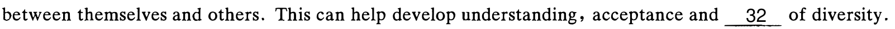
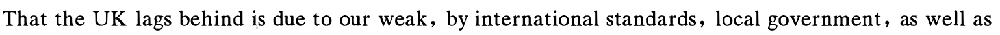

2021年6月大学英语六级考试真题(一)
Part I Writing (30 minutes)
Directions: For this part, you are allowed 30 minutes to write an essay based on the graph below. You should start your essay with a brief description of the graph and comment on China's achievements in urbanization. You should write at least 150 words but no more than200 words.
Degree of urbanization in China from 1980 to 2019
Part n: Listening Comprehension ( 30 minutes)
Section A
Directions: In this section, you will hear two long conversations. At the end of each conversation, you will hear four questions. Both the conversation and the questions will be spoken only once. After you hear a question, you must choose the best (Jnswer from the four choices marked A), B), C) and D). Then mark the corresponding letter on Answer Sheet 1 with a single line through the centre.
Questions 1 to 4 are based on the conversation you have just heard.
1.
2.
3.
4.
Questions 5 to 8 are based on the conversation you have just heard.
5.
6.
7.
'.
Section B
Directions: In this section, you will hear two passages. At the end of each passage , you will hear three or four questions. Both the passage and the questions will be spoken only once. After you hear a question , you must choose the best answer from the four choices marked A), B), C) and D). Then mark the corresponding letter on Answer Sheet 1 with a single line through the centre.
Questions 9 to 11 are based on the passage you have just heard.
9.
10.
11.
Questions 12 to 15 are based on the passage you have just heard.
12.
13.
14.
15.
Section C
Directions: In this section , you will hear three recordings of lectures or talks followed by three or four questions. The recordings will be played only once . After you hear a question , you must choose the best answer from the four choices marked A), B), C) and D). Then mark the corresponding letter on Answer Sheet 1 with a single line through the centre.
Questions 16 to 18 are based on the recording you have just heard.
本页部分文字层异常，已保留原图文字区域；这些区域随窗口缩放，暂不能重新换行或复制。
18.
Questions 19 to 21 are based on the recording you have just heard.
19.
20.
21.
Questions 22 to 25 are based on the recording you have just heard.
22.
23.
24.
25.
Part JI[ Reading Comprehension ( 40 minutes)
Section A
Directions: In this section, there is a passage with ten blanks. You are required to select one word for each blank from a list of choices given in a word bank following the passage. Read the passage through carefully before making your choices. Each choice in the bank is identified by a letter. Please mark the corresponding letter for each item on Answer Sheet 2 with a single line through the centre. You may not use any of the words in the bank more than once .
A new study has drawn a bleak picture of cultural inclusiveness reflected in the children's literature available in Australia. Dr. Helen Adam from Edith Cowan University's School of Education 26 the cultural diversity of children's books. She examined the books 27 in the kindergarten rooms of four day-'care centers in Western Australia. Just 18 percent of 2,413 books in the total collection contained any
example, by 29 Asian culture with chopsticks and traditional dress. Characters that did represent a minority culture usually had 30 roles in the books. The main characters were mostly Caucasian. This causes concern as it can lead to an impression that whiteness is of greater value.
Dr. Adam said children formed impressions about 'difference' and identity from a very young age. Evidence has shown they develop own-race . 31 from as young as three months of age. The books we
本页部分文字层异常，已保留原图文字区域；这些区域随窗口缩放，暂不能重新换行或复制。
share with young children can be a valuable opportunity to develop children's understanding of themselves and others. Books can also allow children to see diversity. They discover both similarities and differences

Census data has shown Australians come from more than 200 countries. They speak over 300 languages at home. Additionally, Australians belong to more than 100 different religious groups. They also work in more than 1, OOO different occupations. "Australia is a multicultural society. The current --1!_ promotion of white middle-class ideas and lifestyles risks _li__ children from minority groups.33 34 This can give white middle-class children a sense of 35 or privilege," Dr. Adam said.
Section B
Directions: In this section, you are going to read a passage with ten statements attached to it. Each statement contains information given in one of the paragraphs. Identify the paragraph from which the information is derived. You may choose a paragraph more than once. Each paragraph is marked with a letter . Answer the questions by marking the corresponding letter on Answer Sheet 2 .
How Marconi Gave Us the Wireless World
A) A hundred years before iconic figures like Bill Gates and Steve Jobs permeated our lives, an Irish Italian inventor laid the foundation of the communication explosion of the 21st century. Guglielmo Marconi was arguably the first truly global figure in modern communication. Not only was he the first to communicate globally, he was the first to think globally about communication. Marconi may not have been the greatest inventor of his time, but more than anyone else, he brought about a fundamental shift in the way we communicate.
B) Today's globally networked media and conimunication system has its origins in the 19th century, when, for the first time, messages were sent electronically across great distances. The telegraph, the -telephone, and radio were the obvious predecessors of the-Internet, -iPotls, and-mobile phones. What made the link from then to now was the development of wireless communication. Marconi was the first to develop and perfect this system, using the recently-discovered "air waves" that make up the electromagnetic spectrum.
C) Between 1896, when he applied for his first patent in England at the age of 22, and his death in Italy in 1937, Marconi was at the center of every major innovation in electronic communication. He was also a skilled and sophisticated organizer, an entrepreneurial innovator, who mastered the use of corporate strategy, media relations, government lobbying, international diplomacy, patents, and prosecution. Marconi was really interested in only one thing: the extension of mobile, personal, long distance communication to the ends of the earth ( and beyond, if we can believe some reports) . Some like to refer to him as a genius, but if there was any genius to Marconi it was this vision.
D) In 1901 he succeeded in signaling across the Atlantic, from the west coast of England to Newfoundland in the USA, despite the claims of science that it could not be done. In 1924 he convinced the British government to encircle the world with a chain of wireless stations using the latest technology that he had devised, shortwave radio. There are some who say Marconi lost his edge when commercial broadcasting came along; he didn't see that radio could or should be used to frivolous (::JGJMJ(ID) ends. In one of his last public speeches, a radio broadcast to the United States in March 1937, he deplored that broadcasting had become a one-way means of communication and foresaw it moving in another
本页部分文字层异常，已保留原图文字区域；这些区域随窗口缩放，暂不能重新换行或复制。
direction, toward communication as a means of exchange. That was visionary genius.
E) Marconi's career was devoted to making wireless communication happen cheaply, efficiently, smoothly, and with an elegance that would appear to be intuitive and uncomplicated to the user-user friendly, if you will. There is a direct connection from Marconi to today's social media, search engines, and program streaming that can best be summed up by an admittedly provocative exclamation: the 20th century did not exist. In a sense, Marconi's vision jumped from his time to our own.
F) Marconi invented the idea of global communication-or, more straightforwardly, globally networked,
principal communication technology of his day. Marconi was the first to develop a practical method for wireless telegraphy using radio waves. He borrowed technical details from many sources, but what set him apart was a self-confident vision of the power of communication technology on the one hand, and, on the other, of the steps that needed to be taken to consolidate his own position as a player in that field. Tracing Marconi's lifeline leads us into the story of modern communication itself. There were other important figures, but Marconi towered over them all in reach, power, and influence, as well as in the grip he had on the popular imagination of his time. Marconi was quite simply the central figure in the emergence of a modern understanding of communication.
G) In his lifetime, Marconi foresaw the development of television and the fax machine, GPS, radar, and the portable hand-held telephone. Two months before he died, newspapers were reporting that he was working on a "death ray," and that he had "killed a rat with an intricate device at a distance of three feet." By then, anything Marconi said or did was newsworthy. Stock prices rose or sank according to his pronouncements. If Marconi said he thought it might rain, there was likely to be a run on umbrellas.
H) Marconi's biography is also a story about choices and the motivations behind them. At one level, Marconi could be fiercely autonomous and independent of the constraints of his own social class. On another scale, he was a perpetual outsider. Wherever he went, he was never "of" the group; he. was always the "other," considered foreign in Britain, British in Italy, and "not American" in the United States. At the same time, he also suffered tremendously from a need for acceptance that drove, and sometimes stained, every one of his relationships.
I) Marconi placed a permanent stamp on the way we live. He was the first person to imagine a practical application for the wireless spectrum, and to develop it successfully into a global communication system-in both terms of the word; that is, worldwide and all-inclusive. He was able to do this because of a combination of factors-most important, timing and opportunity-but the single-mindedness and determination with which he carried out his self-imposed mission was fundamentally character-based; millions of Marconi's contemporaries had the same class, gender, race, and colonial privilege as he, but only a handful did anything with it. Marconi needed to achieve the goal that was set in his mind as an adolescent; by the time he reached adulthood, he understood, intuitively, that in order to have an impact he had to both develop an independent economic base and align himself with political power. Disciplined, uncritical loyalty to political power became his compass. for the choices he had to make.
J) At the same time, Marconi was uncompromisingly independent intellectually. Shortly after Marconi's death, the nuclear physicist Enrico Fermi-soon to be the developer of the Manhattan Project-wrote that Marconi proved that theory and experimentation were complementary features of progress. "Experience can rarely, unless guided by a theoretical concept, arrive at results of any great significance ... on the other hand, an excessive ·trust in theoretical conviction would have prevented Marconi from persisting in experiments which were destined t0 bring about a revolution in the technique of radio-communications." In other words, Marconi had the advantage of not being burdened by preconceived assumptions.
K) The most controversial aspect of Marconi's life-and the reason why there has been no satisfying biography of Marconi until now-was his uncritical embrace of Benito Mussolini. At first this was not problematic for him. But as the regressive ( fftliJH1g) nature of Mussolini's ·regime became clear, he began to suffer a crisis of conscience. However, after a lifetime of moving within the circles of power, he was unable to break with authority, and served Mussolini faithfully ( as president of Italy's national research council and royal academy, as well as a member of the Fascist Grand Council) until the day he died-conveniently-in 1937, shortly before he would have had to take a stand in the conflict that consumed a world that he had, in part, created.
36. Marconi was central to our present-day understanding of communication.
37. As an adult, Marconi had an intuition that he had to be loyal to politicians in order to be influential.
38. Marconi disapproved of the use of wireless communication for commercial broadcasting.
39. Marconi's example demonstrates that theoretical concepts and experiments complement each other in making progress in science and technology.
40. Marconi's real interest lay in the development of worldwide wireless communication:
41. Marconi spent his whole life making wireless communication simple to use.
42. Because of his long-time connection with people in power, Marconi was unable to cut himself off from the fascist regime in Italy.
43. In his later years, Marconi exerted a tremendous influence on all aspects of people's life.
44. What connected the 19th century and our present time was the development of wireless communication.
45. Despite his autonomy, Marconi felt alienated and suffered from a lack of acceptance.
Section C
Directions: There are 2 passages in this section. Each passage is followed by some questions or unfinished statements. For each of them there are four choices marked A), B), C) and D). You should decide on the best choice and mark the corresponding letter on Answer Sheet 2 with a single line through the centre.
Passage One
Questions 46 to 50 are based on the following passage.
Humans are fascinated by the source of their failings and virtues. This preoccupation inevitably leads to an old debate: whether nature or nurture moulds us more. A revolution in genetics has poised this as a modern political question about the character of our society: personalities are hard-wired into our genes what can governments do to help us? It feels morally questionable, yet claims of genetic selection by intelligence are making headlines. This is down to “hereditarian” (遗传论的) science and a recent paper claimed “udifferences in exam performance between pupils attending selective and non-selective schools mirror the genetic differences between them”. With such an assertion, the work was predictably greeted by a lot of absurd claims about “genetics determining academic success”. What the research revealed was the rather less surprising result: the educational benefits of selective schools largely disappear once pupils' inborn ability and socio-economic background were taken into account. It is a glimpse of the blindingly obvious-and there's nothing to back strongly either a hereditary or environmental argument. Yet the paper does say children are “unintentionally genetically selected” by the school system. Central to hereditarian science is a tall claim: that identifiable variations in genetic sequences can predict an individual's aptness to learn, reason and solve problems. This is problematic on many levels. A teacher could not seriously tell a parent their child has a low genetic tendency to study when external factors clearly exist. Unlike-minded academics say the inheritability of human traits is scientifically unsound. At best there is a weak statistical association and not a causal link between DNA and intelligence. Yet sophisticated statistics are used to create an intimidatory atmosphere of scientific certainty. While there's an undoubted genetic basis to individual difference, it is wrong to think that socially
本页部分文字层异常，已保留原图文字区域；这些区域随窗口缩放，暂不能重新换行或复制。
defined groups can be genetically accounted for. The fixation on genes as destiny is surely false too. Medical predictability can rarely be based on DNA alone; the environment matters too. Something as complex as intellect is likely to be affected by many factors beyond genes. If hereditarians want to advance their cause it will require more balanced interpretation and not just acts. of advocacy.
Genetic selection is a way of exerting influence over others, "the ultimate collective control of human destinies," as writer H. G. Wells put it. Knowledge becomes power and power requires a sense of responsibility. In understanding cognitive ability, we must not elevate discrimination to a science; allowing people to climb the ladder of life only as far as their cells might suggest. This will need a more sceptical eye on the science. As technology progresses, we all have a duty to make sure that we shape a future that we would want to find ourselves in.
46. What did a recent research paper claim?
47. What does the author think of the recent research?
48. What does the author say about the relationship between DNA and intelligence?
49. What do hereditarians need to do to make their claims convincing?
50. What does the author warn against in the passage?
Passage Two
Questions 51 to SS are based on the following passage.
Nicola Sturgeon's speech last Tuesday setting out the Scottish government's legislative programme for the year ahead confirmed what was already pretty clear. Scottish councils are set to be the first in the UK with the power to levy charges on visitors, with Edinburgh likely to lead the way.
Tourist taxes are not new. The Himayalan kingdom of Bhutan has a longstanding policy of charging visitors a daily fee. France's tax on overnight stays was introduced to assist thermal spa (t'lffi.jl) towns to develop, and around half of French local authorities use it today.
But such levies are on the rise. Moves by Barcelona and Venice to deal with the phenomenon of "over-tourism" through the use of charges have recently gained prominence. Japan and Greece are among the countries to have recently introduced tourist taxes.

the opposition to taxes and regulation of our aggressively pro-market ruling party. Some UK cities have lobbied without success for the power to levy a charge on visitors. Such levies are no universal remedy as the amounts raised would be tiny compared with what has been taken away by central government since 2010. Still, it is to be hoped that the Scottish government's bold move will prompt others to act. There is no reason why visitors to the UK, or domestic tourists on holiday in hotspots such as Cornwall, should be exempt from taxation-particularly when vital local services including waste collection, park maintenance and arts and culture spending are under unprecedented strain.
On the contrary, compelling tourists to make a financial contribution to the places they visit beyond their personal consumption should be part of a wider cultural shift. Westerners with disposable incomes have often behaved as if they have a right to go wherever they choose with little regard for the consequences. Just as the environmental harm caused by aviation and other transport must come under far greater scrutiny, the social cost of tourism must also be confronted. This includes the impact of short-term lets on housing costs and quality of life for residents. Several European capitals, including Paris and Berlin, are leading a campaign for tougher regulation by the European Union. It also includes the impact of overcrowding, litter and the kinds of behaviour associated with noisy parties.
There is no "one size fits all" solution to this problem. The existence of new revenue streams for some but not all councils is complicated, and businesses are often opposed, fearing higher costs will make them uncompetitive. But those places that want them must be given the chance to make tourist taxes work.
51. What do we learn from Nicola Sturgeon's speech?
52. How come the UK has been slow in imposing the tourist tax?
53. Both international and domestic visitors in the UK should pay tourist tax so as to ___ _
54, What does the author sa-y about Western tourists?
55. What are UK people's opinions about the levy of tourist tax?
Part N Translation ( 30 minutes)
Directions: For this part, you are allowed 30 minutes to translate a passage from Chinese into English. You should write your answer on Answer Sheet 2 .
海南是仅次于台湾的中国第二大岛,是位于中国最南端的省份。海南岛风景秀丽,气候宜人,阳光充足,生物多样,温泉密布,海水清澈,大部分海滩几乎全年都是游泳和日光浴的理想场所,因而被誉为中国的四季花园和度假胜地,每年都吸引了大批中外游客。
海南1988年建省以来,旅游业、服务业、高新技术产业飞速发展,是中国唯一的省级经济特区。在中央政府和全国人民的大力支持下,海南将建成中国最大的自由贸易试验区。